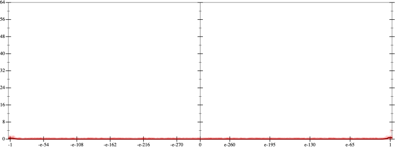
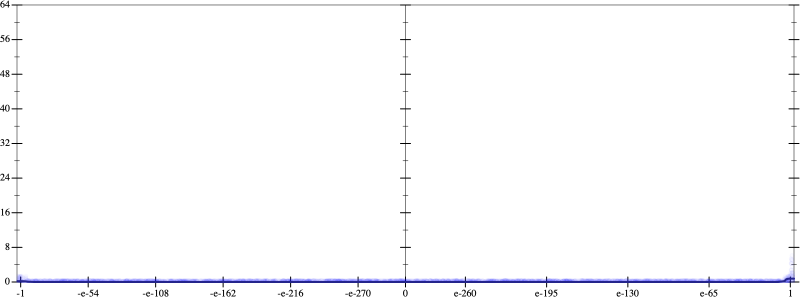
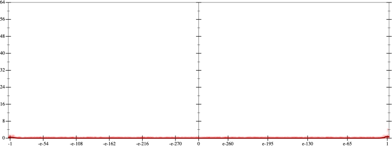
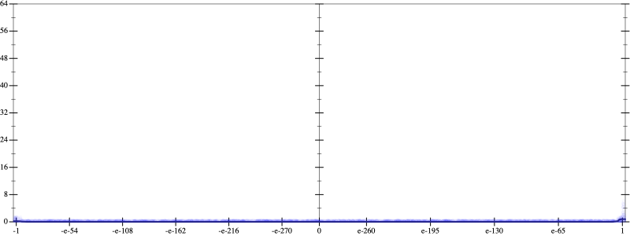

Initial program 0.0
\[\left(\left(\left(1.0 + -4.0 \cdot x\right) + 3.0 \cdot \left(x \cdot x\right)\right) + -0.666667 \cdot \left(\left(x \cdot x\right) \cdot x\right)\right) + 0.041667 \cdot \left(\left(\left(x \cdot x\right) \cdot x\right) \cdot x\right)\]
- Using strategy
rm Applied add-log-exp0.5
\[\leadsto \left(\left(\left(1.0 + -4.0 \cdot x\right) + 3.0 \cdot \left(x \cdot x\right)\right) + -0.666667 \cdot \color{blue}{\log \left(e^{\left(x \cdot x\right) \cdot x}\right)}\right) + 0.041667 \cdot \left(\left(\left(x \cdot x\right) \cdot x\right) \cdot x\right)\]
Applied simplify0.5
\[\leadsto \left(\left(\left(1.0 + -4.0 \cdot x\right) + 3.0 \cdot \left(x \cdot x\right)\right) + -0.666667 \cdot \log \color{blue}{\left(e^{{x}^{3}}\right)}\right) + 0.041667 \cdot \left(\left(\left(x \cdot x\right) \cdot x\right) \cdot x\right)\]
Taylor expanded around inf 0.0
\[\leadsto \left(\left(\left(1.0 + -4.0 \cdot x\right) + 3.0 \cdot \left(x \cdot x\right)\right) + -0.666667 \cdot \color{blue}{{\left(\frac{1}{x}\right)}^{-3}}\right) + 0.041667 \cdot \left(\left(\left(x \cdot x\right) \cdot x\right) \cdot x\right)\]
Applied simplify0.0
\[\leadsto \color{blue}{x \cdot \left(\left(-4.0 + x \cdot 3.0\right) + \left(0.041667 \cdot x\right) \cdot \left(x \cdot x\right)\right) + \left({\left(\frac{1}{x}\right)}^{-3} \cdot -0.666667 + 1.0\right)}\]
 
